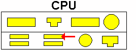
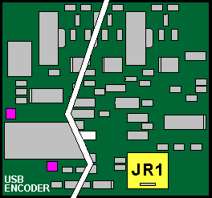
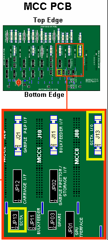
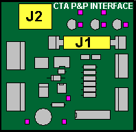
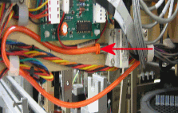
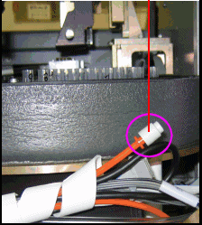

Remove Dual-Gantry Sample Pipettor
This procedure describes how to remove the dual-gantry sample pipettor on integrated DxI instruments.
-
Prepare the instrument.
- Remove the instrument upper rear cover.
- Open the upper left front cover, and insert a cover interlock bypass.
-
Drain the tubing.
- From the Main Menu, select Diagnostics > Device Diagnostics > Digital Devices > Peristaltic and Vacuum Pumps.
- Enable the vacuum pump for the pipettor being serviced.
- Verify that the pipettor is directly over the wash tower.
-
Remove the fitting from the pipettor precision pump and allow the wash buffer to drain into the wash tower.
Caution: When draining wash buffer from the tubing, do not let fluid leak onto the instrument or any of the instrument components. When disconnecting the tubing, hold a dry towel at the in-line fitting.
- After the tubing is drained, disable the vacuum pump and exit the Digital Devices screen.
-
Disconnect the cables and pneumatics tubing.
- Remove power from the motors by moving the switch on the Power Distribution PCB labeled "All DC power (except CPU and reagent coolers)" to the off position.
-
Remove these connectors from the sample pipettor interface PCB.

- J1 - Ribbon Cable
- J3 - Power Harness
-
Remove the USB Cable from both the CPU PCB and JR1 of the USB encoder PCB.


-
Remove the power harness and ribbon cable.


- Remove the power harness from JP13 (SCTA) on the back of the MCC backplane PCB.
- Remove the other end of the harness from J2 (CTA Motor) on the CTA pick-and-place interface PCB of the dual-gantry sample pipettor.
- Remove the ribbon cable from J13 (SCTA I/O) on the MCC backplane PCB.
- Remove the other end of the ribbon cable from J1 (CTA I/O) on the CTA pick-and-place interface PCB of the dual-gantry sample pipettor.
-
Remove the pneumatics tubing from the valve and tubing clamps on the dual-gantry sample pipettor.

-
Attach a plug to the end of the pneumatics tubing.

- Use cable-ties to secure all disconnected cables and tubing to locations where they will not interfere with the movement of any other device.
-
Remove the dual-gantry sample pipettor from the instrument.
Caution: To avoid bending the spline shafts, do not use them to lift the dual-gantry sample pipettor. Bent spline shafts will restrict movement and cause motion errors.
-
Remove the four screws securing the dual-gantry sample pipettor to the universal towers (two screws for each tower).
There are two locating pins that support the weight of the gantry after the screws are removed.
- Grasp the gantry with both hands, pull it off of the locating pins, and remove it through the rear of the instrument.
-
Remove the four screws securing the dual-gantry sample pipettor to the universal towers (two screws for each tower).